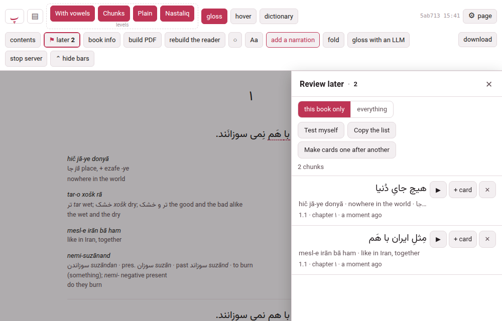
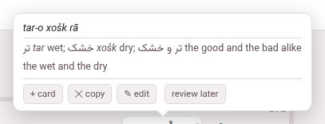
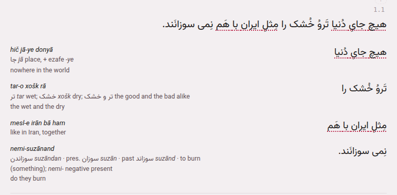
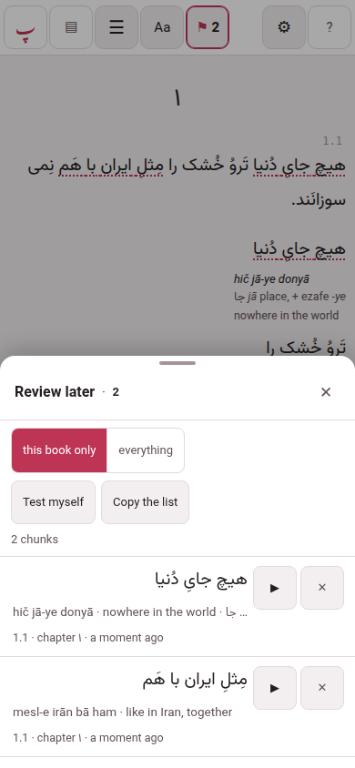
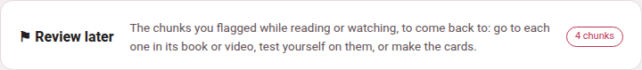
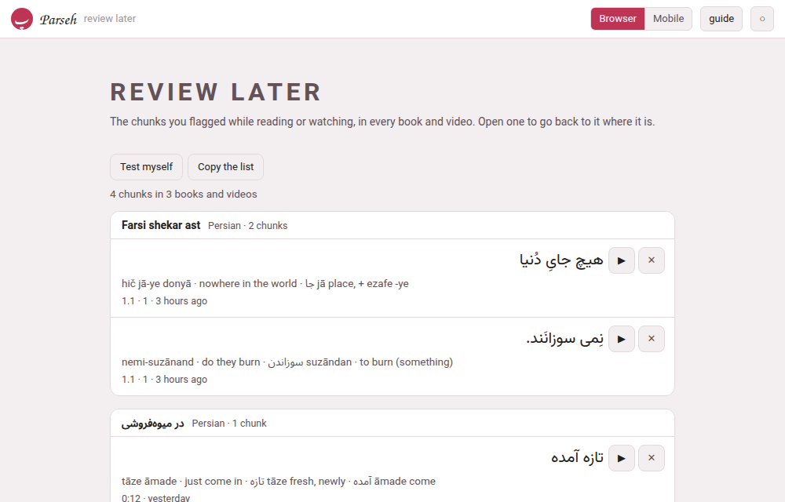

Review later
Reading a story, or watching a video, you meet a chunk you want to come back to — and stopping to make its card breaks the pace that makes reading worth it. Review later is the other way: flag the chunk and go on, and at the end of the chapter, or the day, open the list and do something with it — go back to it where it stands, turn it into a card, test yourself on it, or copy the lot out.

Everything on this page is the same in a book and in a video; where they differ, it says so.
1. Flagging a chunk#
There are four ways, so that one is always at hand. All of them flag the chunk and nothing else — the page does not move and the recording does not stop, and a line at the bottom says marked to review later.
- The cloud’s button.
- Open a chunk’s gloss cloud — point at it, or tap it — and under the gloss, beside + card, copy and edit, is review later. Press it and it reads ✓ marked; press it again and the flag is taken off.
- The L key.
- Point at a chunk and press L: the chunk under the pointer is flagged, or the one whose cloud is open. In a book, with nothing under the pointer, it is the chunk the ✎ pencil is on; if there is none, a line at the bottom says point at a chunk first, then press L. It does nothing while you are typing in a box, nothing while a sheet is open over the page, and nothing with Ctrl, Alt or ⌘ held. L on a flagged chunk takes the flag off.
- The ⚑ button.
- On a computer, in a book, beside the ✎ pencil that stays by a chunk: it flags that chunk, in any level, without hover mode — nothing needs to be open. It reads ✓⚑ once the chunk is flagged, and a press then takes the flag off. A video has no pencil, and so no ⚑ beside it: it has the other three ways.
- A held finger.
- On a touch screen, in a book and in a video, hold your finger on a word: the small menu has Review later: “the chunk” beside Copy, and its last row reads Take “…” off review later once the chunk is flagged.

A flagged chunk wears a quiet dotted line under it, in the page’s accent colour, in every level of a book that sets the chunk, in a video’s phrase and in the subtitles over a video on the whole screen, so that you can see what you have flagged as you read on. It is a line, not only a colour, so it shows in all three themes and to anyone who does not tell colours apart.

A phone can flag, list, go to, test itself on and copy; it never makes a card, because a phone never edits (Browser and Mobile). It works in every book’s reader, however long ago the book was built: nothing needs to be built again.
Diacritics changes nothing here. A flag is made of the book’s own text, with its vowel marks, so a chunk flagged with the marks put away is the same flag as one flagged with them shown, the list shows it as the book wrote it, and a card made from it carries the marks (Levels and their names).
2. The list#
A button in the header, ⚑ later 3 in a book and ⚑ 3 in a video’s player — the number is how many chunks of this book or video are flagged — opens the list. In a book it is in the second row, beside contents; in a video’s player, in the bar after the title, where on a window narrower than 1480 pixels it reads just ⚑ 3; on a phone, on the first line, once something is flagged — there too it is just ⚑ and the number.
- On a computer
- the list is a panel on the right, under the header, as wide as the contents panel. The header stays in reach, so ▶ and the levels go on working, and it does not pause the recording. Esc or ✕ shuts it, and opening it shuts the contents, and the other way about.
- On a phone
- it is a sheet from the bottom edge, as the dictionary’s is, and the back gesture shuts it.

The chunks are in reading order, this book’s or this video’s. Each shows the chunk in its own language and direction, its gloss on one line — press it to open every part: the reading, the transliteration, the meaning, the vocabulary, the sentence it was in — where it is (1.1 · chapter 1 in a book, 12:41 and the chapter’s name in a video) and how long ago you flagged it. Under the header of the list there are the tools, and on each chunk there are the buttons:
- ▶
- — go to the chunk. In a book it loads the chapter if it has not arrived, scrolls to the chunk, lights it for a moment and makes it the reading place; it does not start the recording. In a video it seeks to the caption and plays. The list closes behind it.
- ✕
- — take it off the list. A line at the bottom says removed with Undo beside it, for six seconds.
- + card
- — make a card from the chunk. Below. Computer only.
- this book only | everything
- — which flags the list shows: this book’s (this video only in a player), or every book’s and video’s, grouped under the book or video each is in.
- Test myself
- — see below.
- Copy the list
- — see below.
An empty list says how to flag one — Point at a chunk and press L, or use review later in its cloud — on a phone, hold your finger on a word — and, if other books have some, offers to show them.
Test myself#
Test myself hides the meanings and shows only the chunks. Tap a chunk and its meaning appears with two buttons: I know it, which takes the chunk off the list (known · removed from the list, with the same Undo), and again, which hides the meaning and keeps the chunk for next time. The line above says how many are to go. Stop testing goes back to the list.
Copy the list#
Copy the list asks which shape — as a list (markdown) or as a table (tab-separated) — and puts it on the clipboard, for the chunks the list is showing. The list is one heading for each book or video and a line for each chunk with its gloss and place, ready for a note in the studio; the table has a column each for the chunk, its reading, transliteration, meaning, vocabulary and sentence, its place, its title, its language and the day it was flagged, ready for a spreadsheet.
3. Making cards from it#
+ card on a chunk opens the same card sheet + card in the cloud opens, for that chunk, after loading its chapter if need be: the sheet’s remembered target, deck and type stay as you left them (Making a card). The chunk leaves the list when the card is saved — to Anki, to an exercise deck or as Markdown on the clipboard — with the same line and Undo; close the sheet without saving and it stays.
Make cards one after another works through the whole list: a strip says item 2 of 7 with Skip and Stop, and after each save the next chunk’s sheet opens. It is for the end of a chapter, when you want the cards made and not the choosing.
Both are on a computer only.
4. A chunk that has moved#
A flag remembers where the chunk was — the subparagraph, the place in it, the chapter — and what the chunk said. If the book was edited since and the chunk is not there any more, the flag is adrift: it stays in the list with the text and the gloss it was saved with, and says this chunk is no longer where it was. ▶ and + card are shut with that reason; ✕, Test myself and Copy the list still work, so nothing is lost. A chunk that only moved — a boundary was cut or joined next to it — is found again by its text.
5. The hub’s door and its page#
The hub has a door, ⚑ Review later, on the browser interface and the mobile one, with the number of chunks flagged (nothing marked yet where there are none; the language chips count only that language’s). It opens a page, /later/, with every chunk you flagged in every book and video, grouped under the book or the video it is in, with its language and count. The list has the same tools — Test myself, Copy the list, ✕ — and every chunk’s ▶ opens the book or the video at that chunk, with the list open on it.


The page is one column on both layouts, with rows a finger high under the mobile one, and it opens on a phone when the computer is away: it shows what the phone has.
6. Where the flags are kept#
They are yours, not the book’s. A flag is kept by the computer Parseh runs on, in config/prefs.json beside the places you were reading, and follows you to your other devices; it is never written into a book, so it is not in the book’s folder, not in a bundle you download or hand on, and not in a backup of the shelf — what no backup holds names the file.
- A phone keeps its flags on itself
- and sends them to the computer at the next chance — when a page loads, when it comes back online, when you come back to the page. The list says 1 change will be sent when the computer can be reached until it has.
- One chunk is one flag
- , whatever flagged it: flag the same chunk on the phone and on the computer and there is one.
- The newest change wins.
- Remove a flag on the computer and a phone that was away, and still has it, cannot bring it back: the removal is remembered for 90 days.
- There is room for 5000 flags
- ; past that the oldest go, and each text is cut to a sensible length.
A video is flagged the same way and listed the same way: the cloud’s button, the L key, the held finger, ⚑ later in the player’s bar, and the list on the right, where ▶ seeks to the caption and plays it (The video player).